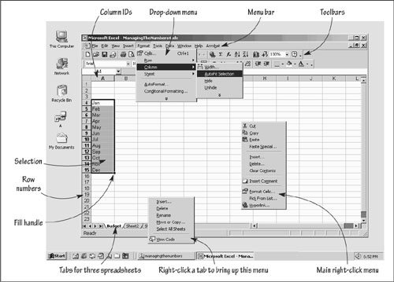
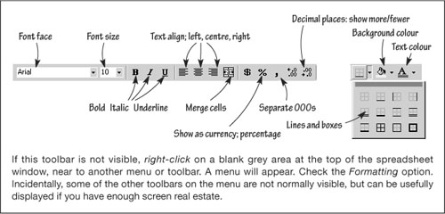

What you need to bring to the party
If you can do very simple arithmetical sums, with or without a calculator, and find your way around a computer, you can do everything in this chapter – and indeed in this book. If you can power on a computer, open, say, MS Word and write a short note or memo, and then save and print your work, you are well placed. Why? Because all the common office applications – Word and Excel included – have the same look and feel. If you can use Word, you can use Excel. If you are not wholly familiar with tech-speak, please browse Figs 4.1 and 4.2. There is not room in this book to digress into great mysteries of computing, so we will job through the essentials at a rapid pace. You are welcome to download supplementary material from this book’s website.
Fig 4.1. A virtual desktop
Fig 4.2. The format toolbar
Why bother?
|
There is at least one more benefit to doing the numbers yourself with a PC. The act of keying figures, assumptions and relationships helps them sink in more effectively than when you just read them. It is almost therapeutic. No, really. It is.